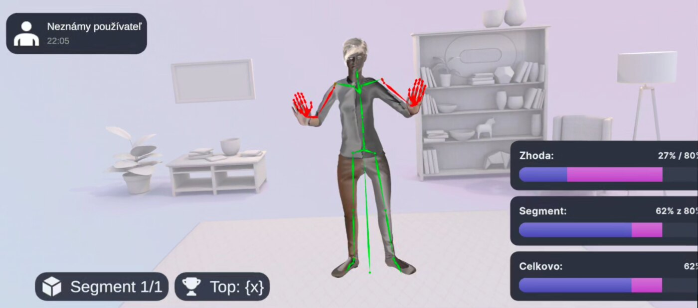
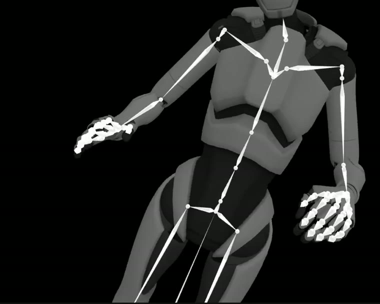
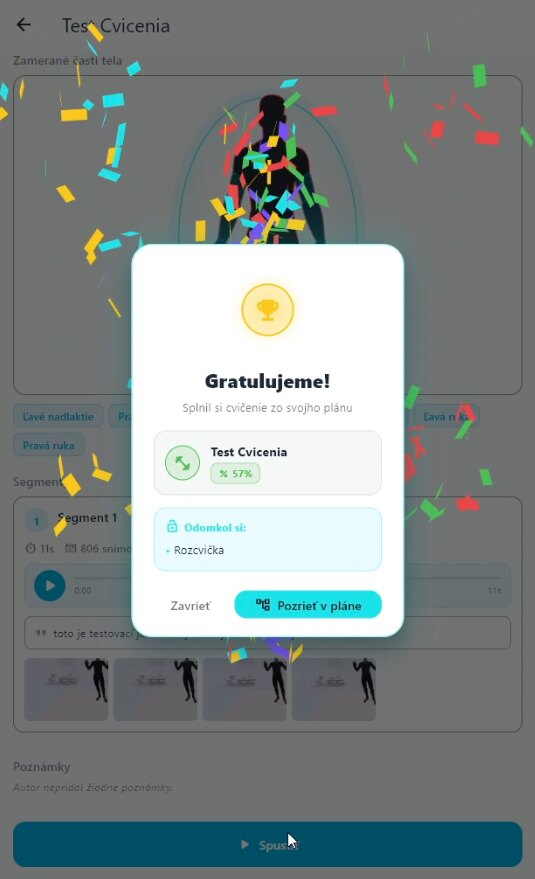

Zábery z aplikácie: cvičenie s farebnou spätnou väzbou na kostre, snímanie tela, výsledok segmentu, výber postavy a mobilná aplikácia.
Bakalárska práca2025 – 2026
MetaPohyb
Systém pre riadenú rehabilitáciu vo VR. Fyzioterapeut pripraví plán v mobilnej aplikácii, pacient cvičí v headsete Meta Quest 3 a aplikácia v reálnom čase hodnotí, ako presne zopakoval pohyb. Celý systém som navrhol a implementoval sám.
- ▸Backend: PostgreSQL v Supabase, Row Level Security podľa rolí, triggery pre progres plánov, overenie e-mailu z vlastnej domény.
- ▸Vlastný protokol: UDP discovery, párovanie a príkazy cez WebSocket s heartbeatom, prenos súborov cez HTTP so session tokenom.
- ▸Pohybové dáta: vlastný binárny formát kostry, dekodér v C# aj v Darte, hodnotenie pohybu z uhlov kĺbov.
- ▸Hlasové ovládanie spracované priamo v headsete bez internetu (lokálny model Vosk).
- ▸Server priamo v headsete: WebSocket (RFC 6455) aj HTTP súborový server napísané nad TcpListener, bez hotovej knižnice. Heartbeat po 5 s, odpojenie po 15 s bez odpovede.
- ▸Celé telo: 84 kĺbov z Meta Movement SDK, 40 B na kĺb. Skóre z uhlovej odchýlky každého kĺbu (tolerancia 45°), vyhladené a vážené trvaním segmentov.
- ▸Mobilná aplikácia: vetva pre pacienta a pre fyzioterapeuta, grafový editor plánov, denné misie generované z ID používateľa a dátumu, pripomienky, SK/EN.
- ▸Overenie: jednotkové testy v Unity aj vo Flutteri, používateľské testovanie na 5 – 10 ľuďoch, návrh konzultovaný s fyzioterapeutom.
Flutter / DartSupabasePostgreSQLUnity 6 / C#Meta XR SDKWebSocketUDPVoskMeta Quest 3